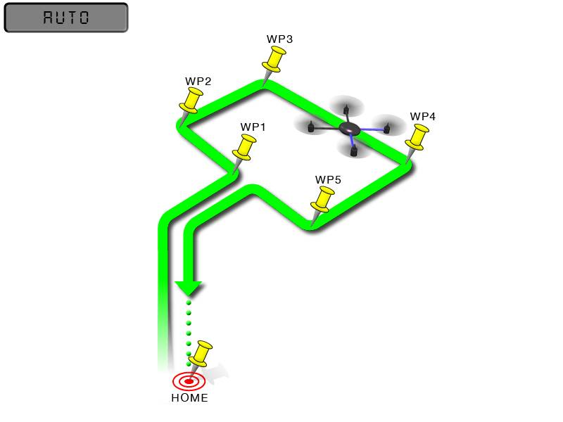
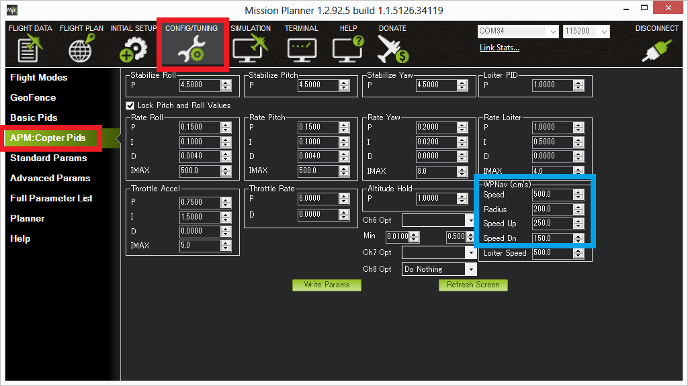

Auto Mode¶
In Auto mode the copter will follow a pre-programmed mission script stored in the autopilot which is made up of navigation commands (i.e. waypoints) and “do” commands (i.e. commands that do not affect the location of the copter including triggering a camera shutter). This page provides an overview of Auto mode.
Information on creating a mission script, can be found on the Planning a mission with waypoints and events page. A full list of supported commands can be found on the Mission Command List page.
Overview¶
{kind=link}
AUTO mode navigates between each waypoint in a straight line and as it approaches each waypoint follows a smooth curving path towards the next waypoint (S-Curve). It controls the path as it approaches a waypoint to be within the WPNAV_RADIUS of each waypoint. The speed is lowered below WPNAV_SPEED, as necessary, to keep the path within the set corner lateral acceleration limit parameter (WPNAV_ACCEL_C).
AUTO mode incorporates the altitude control from AltHold mode and position control from Loiter mode and should not be attempted before these modes are flying well. All the same requirements apply including ensuring that vibration levels and compass interference levels are acceptable and that the GPS is functioning well including returning an HDOP of under 2.0.
Controls¶
AUTO should be set-up as one of the 飞行模式 on the flight mode switch.
You must arm your copter before you can engage AUTO mode. See Arming the motors for details on how to arm your copter.
Note
The AUTO_OPTIONS parameter can be used to alter this behaviour, allowing arming while in AUTO mode, and/or, allowing a mission takeoff command to start upon AUTO mode entry, even if the throttle has not been raised.
If starting the mission while the copter is on the ground the pilot should ensure the throttle is down, then switch to the Auto flight mode, then raise the throttle. The moment that the throttle is raised above zero, the copter will begin the mission.
If starting the mission from the air the mission will begin from the first command the moment that the flight mode switch is moved to Auto. If the first command in the mission is a take-off command but the vehicle is already above the take-off command’s altitude the take-off command will be considered completed and the vehicle will move onto the next waypoint.
At any time the pilot can retake control from the autopilot by returning the flight mode switch to another flight mode such as Stabilize or Loiter. If the pilot then switches to AUTO again, the mission will resume from the last command.
During the mission the pilot’s roll, pitch and throttle inputs are ignored but the yaw can be overridden with the yaw stick. This allows the pilot to for example aim the nose of the copter (which might have a hard mounted camera on it) as the copter flies the mission. The autopilot will attempt to retake yaw control as the vehicle passes the next waypoint.
Missions can be entered, amended through the Mission Planner’s Flight Plan screen. Please refer to the Mission Command List wiki page for a full list of supported commands along with a short description of each.
Ending a Mission¶
Missions should normally have an RTL as their final command to ensure the copter will return after the mission completes. Alternatively the final command could be a LAND with a different location. Without a final RTL or LAND command the copter will simply stop at the final waypoint and the pilot will need to retake control with the transmitter.
Remember that when using RTL, the copter will return to the “home” position which is the location where the copter was armed.
As the copter touches down at the end of the mission the vehicle should automatically disarm but occasionally the vehicle may not sense the landing and the pilot may need to hold the throttle down and takeoff in another mode like Stabilize or Loiter and then manually disarm the vehicle.
Tuning¶
{kind=link}
AUTO mode incorporates the altitude control from AltHold mode and position control from Loiter mode.
The maximum horizontal speed of the copter can be adjusted with the Speed (WPNAV_SPEED) parameter from the Mission Planner’s Config/Tuning >> Copter Pids screen (see blue box above). The default is 500 meaning 5m/s. A typical copter can reach top speeds of 10m/s ~ 13m/s (i.e. 1000 ~ 1300) before it becomes unable to both maintain altitude and horizontal speed.
The vertical speeds up and down can similar be adjusted with the Speed Up (WPNAV_SPEED_UP) and Speed Dn (WPNAV_SPEED_DN) parameters. WPNAV_ACCEL_Z determines how fast the speed can change.
Other speed control related parameters that can be adjusted to manage how fast speed changes occur are: WPNAV_ACCEL, and WPNAV_JERK.
The Radius (WPNAV_RADIUS allows you to control how close the copter must come to the exact waypoint position before the waypoint is considered “complete” and the copter moves onto the next waypoint. This only applies when the waypoint command includes a delay of 1 second or more. Without a delay the waypoint is considered a “fast waypoint” and the copter will begin towards the next waypoint once the intermediate target that it is chasing has reached the waypoint (S-Curve behavior only applies to “fast” waypoints). This intermediate target can be 10m or more ahead of the copter (its distance ahead of the copter increases with the Speed parameter).